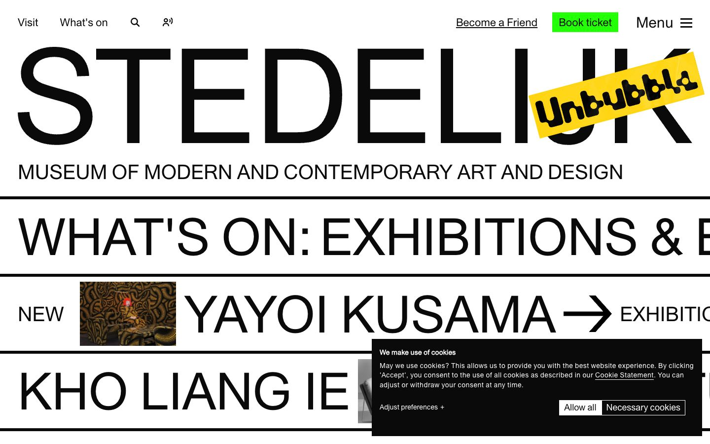

References / Website / 72
Stedelijk Museum Amsterdam website
The museum’s home page stacks its name and its programme as full-width lines of very large grotesque capitals between heavy black rules.
- Source
- stedelijk.nl
- Creator
- Stedelijk Museum Amsterdam
- Style
- International Typographic Style (agent-proposed, not yet reviewed by a person)
- Moods
- Bold, objective, direct
- Evidence
- Captured with
tools/capture.mjs(headless Chrome, 1440 × 900) on 25 September 2026 and inspected. The screenshot shows the first viewport; the measurement covers up to four screens. A cookie notice covers part of the lower right quarter of the screenshot. - Reviewed
- Rights
- Third-party work, stored with credit for commentary. License: unverified. Rights policy
Observed
- The word STEDELIJK fills the full width of the page in very large black grotesque capitals.
- A tilted yellow sticker with the word “Unbubble” in a heavy rounded display face overlaps the last letters of the name.
- Below it, “MUSEUM OF MODERN AND CONTEMPORARY ART AND DESIGN” is set in one line of smaller capitals.
- Heavy black horizontal rules divide the page into bands. Each band holds one line of large capitals, such as “WHAT’S ON: EXHIBITIONS &” and “YAYOI KUSAMA”, cut off at the right edge.
- One small square photograph sits inside a band next to the word NEW.
- The only flat color in the interface is a bright green “Book ticket” button at the top right.
Why it belongs
The measurement finds one grotesque family (Union) for 98% of the text, square corners, no shadows, two CSS colors, a size range of 3.47, and 52% uppercase text.
The yellow sticker is an exhibition campaign placed on top of the identity, not part of the grid. It is the one element that breaks the style.
Borrow
Treat a list of exhibitions as a stack of full-width type bands separated by heavy rules.
Keep one accent color for the one action that matters (here, tickets).
Measured
Machine-extracted by tools/extract-traits.js on . Full measurement.
- Type families
- Union Regular (98%), Union SMA Ribbon (2%)
- Type scale ratio
- 1.95
- Median radius
- 0 px
- Mean chroma
- 0
- Palette
- #ffffff 79%
- #0a0a0a 21%

